This website was created for people who is aspiring to buy Monster Energy drinks, know what a monster energy drink is, the history and background of monster energy drinks, knowing it's effect to our bodies. First, what is a Monster Energy drink? It is a popular high-caffeine carbonated energy drink launch in 2002 by Monster Beverage Corporation. Which is designed to boost energy, focus, and performance, that contains inside the drink are caffeine, taurine, ginseng, and B vitamins. Additionally, It is known for it's wide variety of flavors and lifestyle branding. Second, What does it do to your body? Basically, these legal stimulants can incease alertness, attention, and energy, as well as increasing blood pressure, heart rate, and breathing, meaning that these products are marketed as enhancers of mental acuity and physical performance, and should not be drank by ages below 16. Meaning that it can be unhealthy and lethal if you were to drink more than 3 monster energy drinks in a day. Lastly, Monster Energy drinks have different sort of flavors that is exciting to drink and taste, monster energy drink have over 150 different monster energy drink flavors and product variations available worldwide. So give it a try and buy one today!
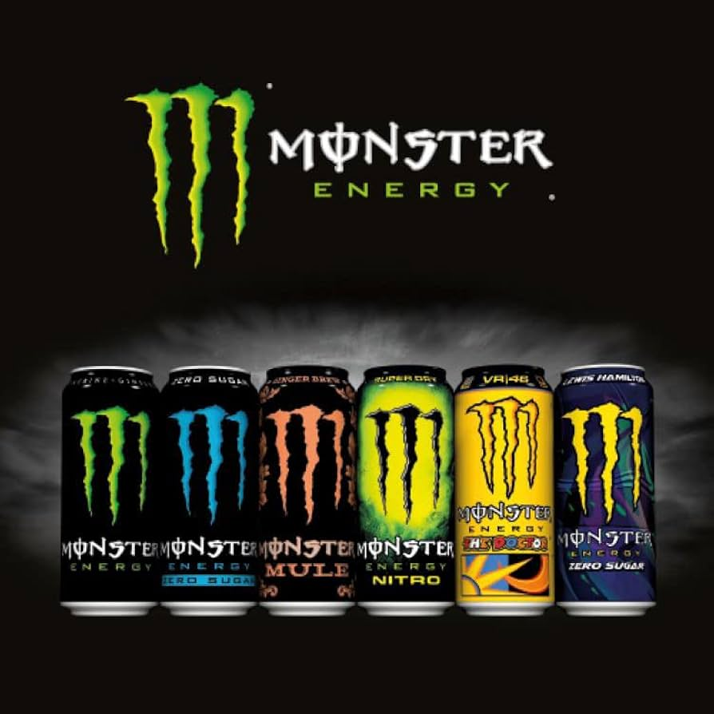
Moreover, you can make custom DIY's using the used cans and can pins of the monster energy drink. making custom DIY's of these are very creative and useful for yourself and for other uses, you can also turn these used cans and can pins into garments which are very unique, these can be turned into garments, bracelets, necklaces, earrings, patch for your shirt and bag, or just a display in your room or around the house Here are some examples of custom DIY's:
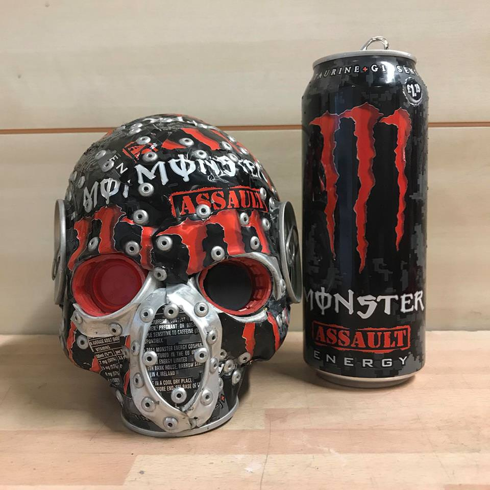
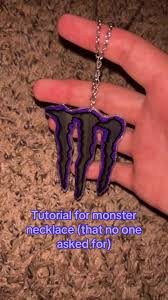
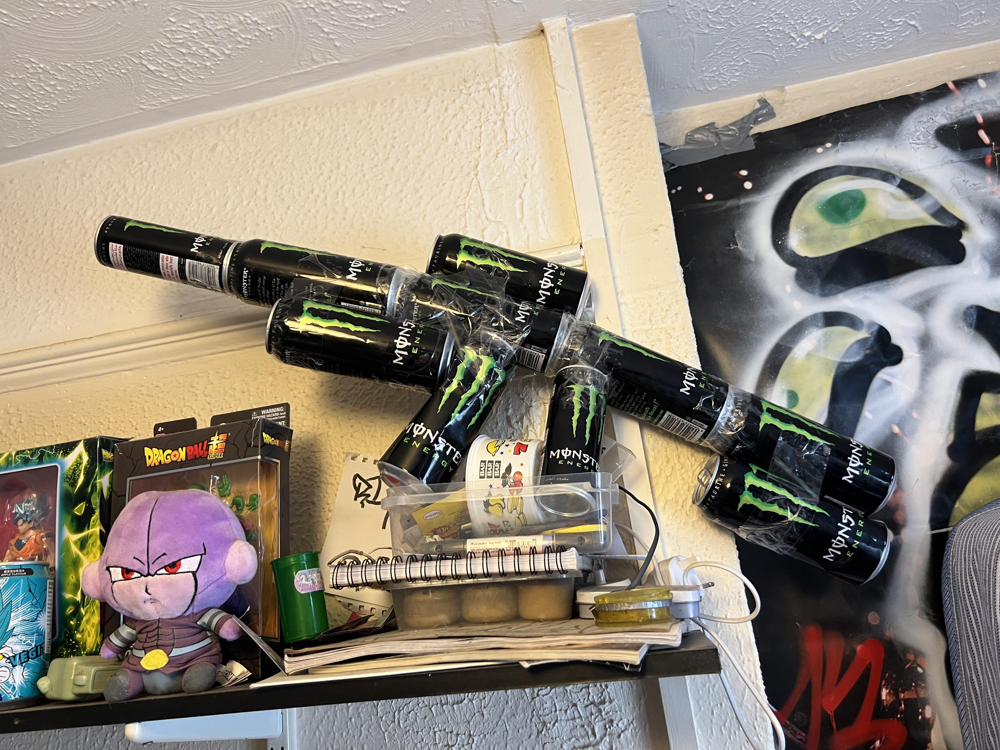
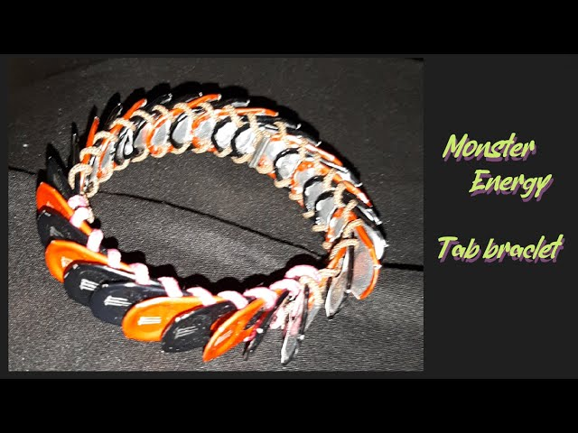
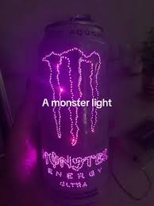
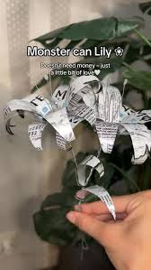
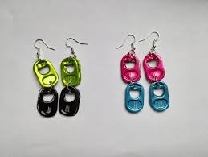
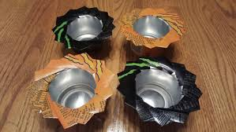
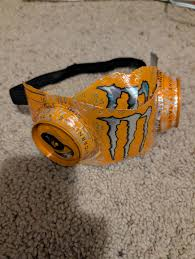
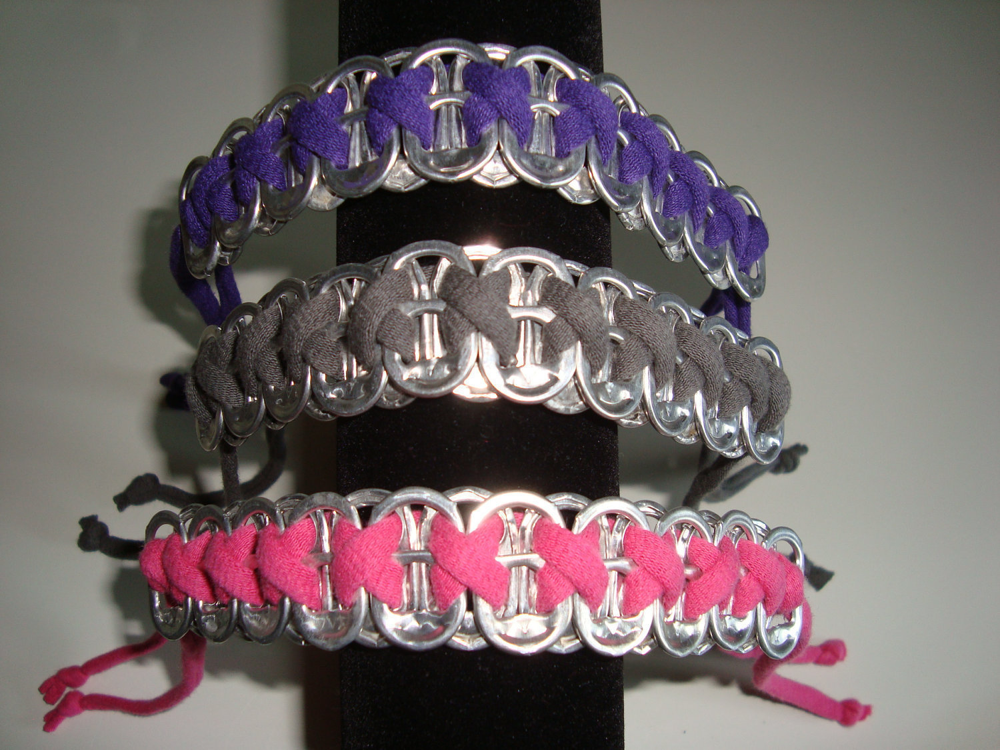
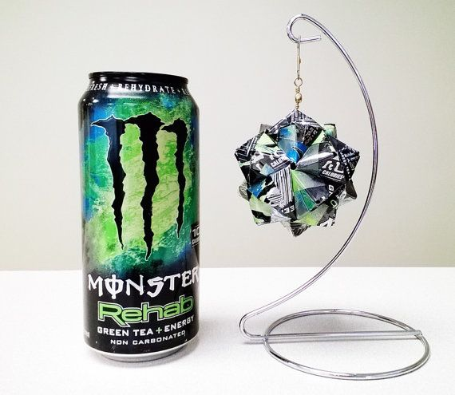
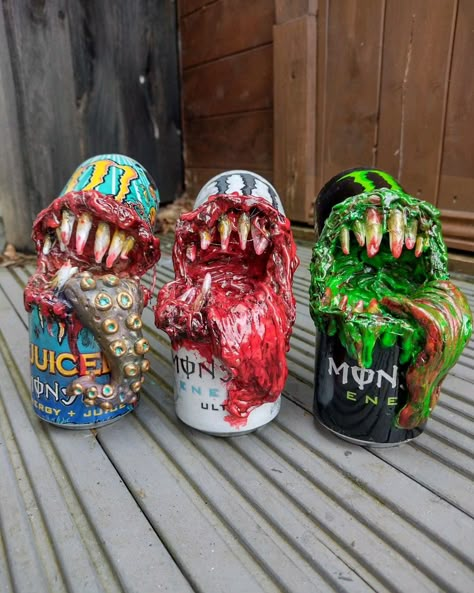
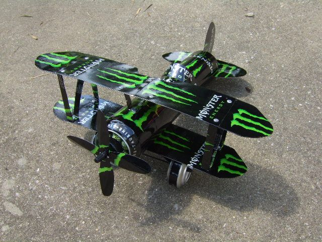
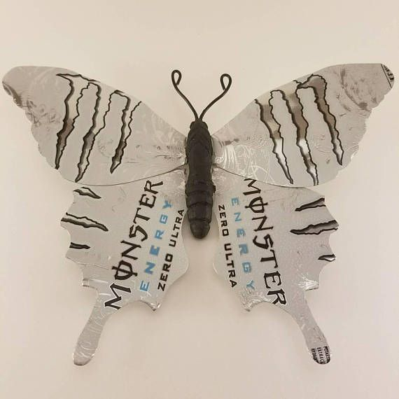
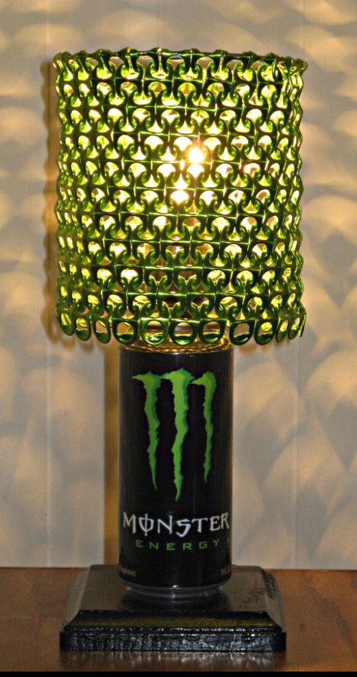
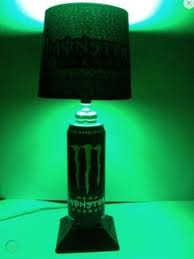
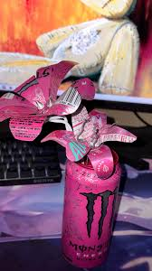
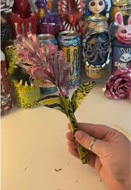
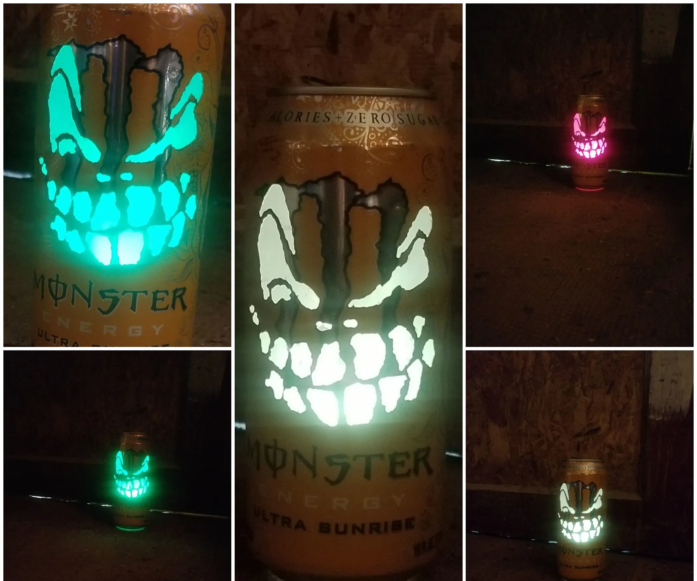
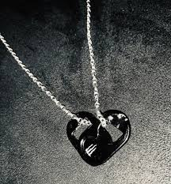
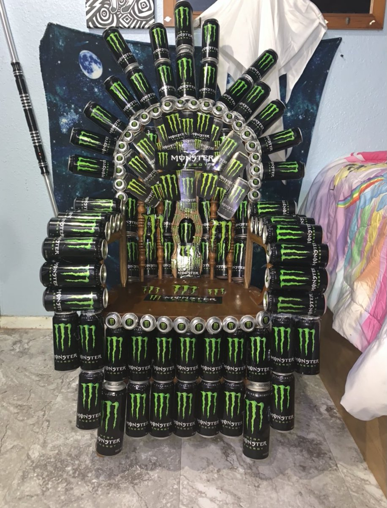
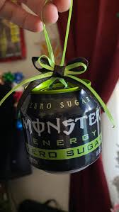
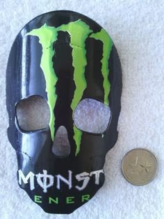